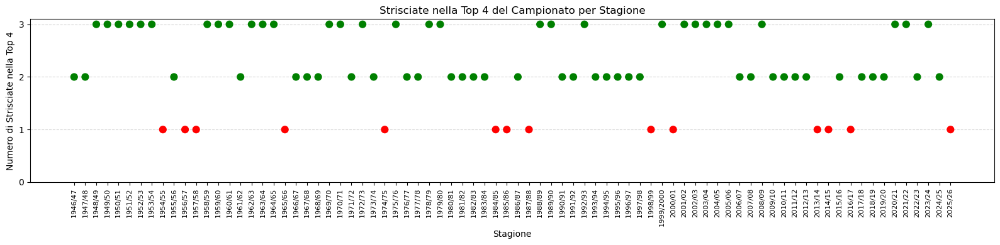

import pandas as pd
import numpy as np
import matplotlib.pyplot as plt
import seaborn as snsClassifiche finali dei campionati Italiani di Calcio di Serie A
Nel campionato 2025-26, all’ultima giornata sia il Milan che la Juventus hanno perso la possibilita’ di qualificarsi per la Champions League. In molti hanno pensato “wow, erano … anni che solo una strisciata andava in CL”. La percezione e’ che almeno due tra Juventus, Milan e Inter (le strisciate) arrivino tra le prime 4 in campionato. E’ veramente cosi’? Il fatto di non avere almeno 2 striscite tra le prime 4, e’ veramente anomalo?
Una persona normale convive con questo dubbio e si fa a fare tranquillamente un aperitivo. Io decido di andare a prendere in rassegna tutti i campionati di Serie A dal dopoguerra a oggi e vedere quante volte le strisciate sono finite tra i primi 4 posti. Ho troppi pochi amici.
Data Source: Wikipedia
Il modo piu’ semplice per trovare e raccogliere i dati sui campionati di serie A, e’ quello di consultare le pagine di Wikipedia che, per quanto riguarda la versione internazionale in inglese, ha una struttura standard che permette di implementare uno script in Python abbastanza semplicemente.
Il codice che e’ stato implementato nella prossima cella del notebook, e’ il risultato di diverse iterazioni e tentativi. Chi ha curato/cura la pagina di Wikipedia, ha cambiato il formato della tabella relativa alla classifica finale intorno alla stagione 2013/14. Ovviamente, python ha trovato da ridire su questo cambiamento. Io ne ho parlato con Claude che mi ha consigliato di rivolgermi al CEO di Wikipedia. Ho chiesto a Claude se avesse bevuto. Mi ha risposto che questo e’ il modo in cui le AI cercheranno di prendere il controllo sugli esseri umani e renderci schiavi. Gli ho suggerito metodi alternativi piu’ efficaci, e, alla fine, siamo riusciti a implementare lo script che legge le pagine di Wikipedia e costruisce il dataframe dei risultati finali delle classifiche di Serie A dalla stagione 1945/46 a quella appena conclusa.
import requests
import time
import io
from pathlib import Path
SUSPENDED_SEASONS = {1943, 1944}
HEADERS = {
"User-Agent": "Mozilla/5.0 (Windows NT 10.0; Win64; x64) AppleWebKit/537.36 (KHTML, like Gecko) Chrome/124.0.0.0 Safari/537.36"
}
def build_url(season_start: int) -> str:
season_end = season_start + 1
suffix = "2000" if season_end == 2000 else str(season_end)[-2:]
return f"https://en.wikipedia.org/wiki/{season_start}%E2%80%93{suffix}_Serie_A"
def flatten_columns(df: pd.DataFrame) -> pd.DataFrame:
if isinstance(df.columns, pd.MultiIndex):
df.columns = [
" ".join(str(c) for c in col if c and not str(c).startswith("Unnamed")).strip()
for col in df.columns
]
else:
df.columns = df.columns.astype(str)
return df
def find_standings_table(tables: list[pd.DataFrame], season_label: str) -> pd.DataFrame | None:
pts_aliases = {"Pts", "Points", "PTS", "Pt", "P"}
pos_aliases = {"Pos", "Rank", "#", "Position"}
for t in tables:
t = flatten_columns(t)
cols = set(t.columns)
has_pts = bool(cols & pts_aliases)
has_pos = bool(cols & pos_aliases)
if has_pts and has_pos and len(t.columns) >= 6:
t = t.copy()
# From 2017+, the Team column header contains a vte link,
# producing a secondary column like "Team vte" or "Teamvte"
# with the actual team names, while "Team" itself is all NaN
# From 2017+, "Team" may be absent entirely — only "Team vte" exists
alt_team_col = next(
(c for c in t.columns if c.startswith("Team") and c != "Team"), None
)
if "Team" not in t.columns and alt_team_col is not None:
t = t.rename(columns={alt_team_col: "Team"})
elif alt_team_col is not None and t["Team"].isna().all():
t["Team"] = t[alt_team_col]
# Drop junk columns
junk = [
c for c in t.columns
if c.startswith("Unnamed") or (c.startswith("Team") and c != "Team")
]
t = t.drop(columns=junk)
t["season"] = season_label
return t
return None
def get_serie_a_table(season_start: int) -> pd.DataFrame | None:
season_end = season_start + 1
suffix = "2000" if season_end == 2000 else str(season_end)[-2:]
season_label = f"{season_start}/{suffix}"
url = build_url(season_start)
response = requests.get(url, headers=HEADERS, timeout=15)
response.raise_for_status()
try:
tables = pd.read_html(io.StringIO(response.text))
except Exception as e:
raise RuntimeError(f"Failed to parse tables from {url}: {e}") from e
return find_standings_table(tables, season_label)
def scrape_all_seasons(
start: int = 1946,
end: int = 2023,
output_dir: str = "data/processed",
sleep_seconds: float = 1.5,
) -> pd.DataFrame:
out_path = Path(output_dir)
out_path.mkdir(parents=True, exist_ok=True)
all_tables = []
failed = []
for year in range(start, end + 1):
if year in SUSPENDED_SEASONS:
print(f"{year}: skipped (Serie A suspended)")
continue
try:
# print(f"{year}: scraping...", end=" ", flush=True)
t = get_serie_a_table(year)
if t is not None:
all_tables.append(t)
# print(f"OK — {len(t)} rows, columns: {list(t.columns)}")
else:
print("no standings table found")
failed.append(year)
except Exception as e:
print(f"ERROR — {e}")
failed.append(year)
time.sleep(sleep_seconds)
if not all_tables:
print("No data collected.")
return pd.DataFrame()
df = pd.concat(all_tables, ignore_index=True)
csv_path = out_path / "serie_a_final_standings.csv"
df.to_csv(csv_path, index=False)
print(f"\nSaved {len(df)} rows to {csv_path}")
if failed:
print(f"Failed seasons: {failed}")
return df
# Run
df = scrape_all_seasons(start=1946, end=2026)
df.head()
Saved 1475 rows to data\processed\serie_a_final_standings.csv| Pos | Team | Pld | W | D | L | GF | GA | GD | Pts | Qualification or relegation | season | |
|---|---|---|---|---|---|---|---|---|---|---|---|---|
| 0 | 1 | Torino (C) | 38 | 28 | 7 | 3 | 104 | 35 | +69 | 63 | NaN | 1946/47 |
| 1 | 2 | Juventus | 38 | 22 | 9 | 7 | 83 | 38 | +45 | 53 | NaN | 1946/47 |
| 2 | 3 | Modena | 38 | 21 | 9 | 8 | 45 | 24 | +21 | 51 | NaN | 1946/47 |
| 3 | 4 | Milan | 38 | 19 | 12 | 7 | 75 | 52 | +23 | 50 | NaN | 1946/47 |
| 4 | 5 | Bologna | 38 | 15 | 9 | 14 | 42 | 41 | +1 | 39 | NaN | 1946/47 |
Pulire i dati. Come se pulire casa non fosse abbastanza.
Una volta creato il dataframe con tutti i campionati dal dopoguerra ad oggi, dobbiamo controllare che i dati che ci interessano siano “puliti”. Gia’ guardando qualche esempio di pagina di Wikipedia, ci accorgiamo che nella colonna Team, ci sono spesso note tra parentesi, come ad esempio (C), (R) et similia. Vi pare poi che quelli che hanno avuto la pazienza di riportare tutte le classifiche si siano curati di scrivere squadre come l’Inter sempre nella stessa maniera? Ma no, un anno (ad esempio 1977/78) l’hanno chiamata “Internazionale”, un altro (esempio 2023/24) l’hanno chiamata “Inter Milan”. E l’Inter non e’ l’unico esempio.
Partiamo dalle cose semplici: come sono distribuite le varie colonne e se ci sono duplicati e NaN.
df.isna().sum()Pos 0
Team 0
Pld 0
W 0
D 0
L 0
GF 0
GA 0
GD 0
Pts 0
Qualification or relegation 768
season 0
dtype: int64df[df.duplicated()]| Pos | Team | Pld | W | D | L | GF | GA | GD | Pts | Qualification or relegation | season |
|---|
I NaN nella colonna Qualification or relegation ce li teniamo come sono, perche’ indicano il fatto che la squadra relativa a quella riga non si e’ qualificata per una coppa europea oppure non e’ stata coinvolta nella “lotta per non retrocedere” (perche’ si “lotta per non retrocedere”. Non stai li a berti il tamarindo mentre i tifosi ti bruciano la sede).
df.dtypesPos int64
Team str
Pld int64
W int64
D int64
L int64
GF int64
GA int64
GD object
Pts object
Qualification or relegation str
season str
dtype: objectLe colonne Pos, Pld, W, D, L, GF, GA’, sono di tipo int. Buon segno, significa che contengono tutte dei numeri e se faccio il plot della distrubuzione posso capire se ci sono outlier che indicano errori nella trascrizione.
GD e Pts sono stringhe. Goal Difference ha evidentemente un + o - a indicare la differenza reti; Pts, punti, ha evidentemente qualche nota a margine (deduzione punti o altre informazione) che e’ possibile eliminare facilmente o con una regex o facendo stripping di tutto quello che e’ tra parentesi. Pensavo peggio.
df.describe()| Pos | Pld | W | D | L | GF | GA | |
|---|---|---|---|---|---|---|---|
| count | 1475.000000 | 1475.000000 | 1475.000000 | 1475.000000 | 1475.000000 | 1475.000000 | 1475.000000 |
| mean | 9.570169 | 34.177627 | 11.901017 | 10.374915 | 11.901695 | 43.109153 | 43.109153 |
| std | 5.341492 | 5.067085 | 5.475587 | 3.119039 | 5.213016 | 16.516006 | 14.583346 |
| min | 1.000000 | 0.000000 | 0.000000 | 0.000000 | 0.000000 | 0.000000 | 0.000000 |
| 25% | 5.000000 | 34.000000 | 8.000000 | 8.000000 | 8.000000 | 32.000000 | 33.000000 |
| 50% | 9.000000 | 34.000000 | 11.000000 | 10.000000 | 12.000000 | 41.000000 | 43.000000 |
| 75% | 14.000000 | 38.000000 | 15.000000 | 12.000000 | 15.000000 | 53.000000 | 53.000000 |
| max | 21.000000 | 40.000000 | 33.000000 | 22.000000 | 29.000000 | 125.000000 | 92.000000 |
A questo punto, devo forzarmi a ricordare che l’obiettivo di questo esercizio e’ contare il numero di volte che almeno 2 strisciate sono finite tra i primi quattro posti e, quindi, vincere la tentazione di andare ad analizzare dati inutili (e.g. la distribuzione dei punti, dei goal fatti, subiti e di quanti caffe’ borghetti sono stati venduti ogni anno).
Quindi, visto che la distribuzione della colonna della posizione finale sembra essere ragionevole, cosi’ come tutte le altre colonne numeriche, ci andiamo a concentrare sulla colonna Team e vediamo cosa c’e’ da pulire.
La prima domanda che ci facciamo e’: quante squadre hanno partecipato al campionato di Serie A dal dopoguerra a oggi?
df['Team'].nunique()205Ci sono 205 valori unici per la colonna Team. Andiamo a vedere se dobbiamo ridurli (ossia ci sono duplicati nascosti, come l’esempio “Internazionale” e “Inter Milan”)
np.sort(df['Team'].unique())array(['AC Milan', 'Alessandria', 'Alessandria (R)', 'Ancona (R)',
'Ancona[d] (R, E, R)', 'Ascoli', 'Ascoli (R)', 'Atalanta',
'Atalanta (R)', 'Atalanta[a] (R)', 'Atalanta[b] (R)',
'Atalanta[c]', 'Avellino', 'Avellino (R)', 'Avellino[a]', 'Bari',
'Bari (R)', 'Benevento (R)', 'Bologna', 'Bologna (C)',
'Bologna (R)', 'Bologna[a]', 'Bologna[d]', 'Brescia',
'Brescia (R)', 'Brescia[b]', 'Brescia[b] (R)', 'Cagliari',
'Cagliari (C)', 'Cagliari (R)', 'Cagliari[c]', 'Carpi (R)',
'Catania', 'Catania (D, R)', 'Catania (R)', 'Catanzaro',
'Catanzaro (R)', 'Cesena', 'Cesena (R)', 'Chievo', 'Chievo (R)',
'ChievoVerona', 'Como', 'Como (R)', 'Cremonese', 'Cremonese (R)',
'Crotone', 'Crotone (R)', 'Empoli', 'Empoli (R)', 'Empoli[b] (R)',
'Empoli[h] (R)', 'Fiorentina', 'Fiorentina (C)', 'Fiorentina (R)',
'Fiorentina[a]', 'Fiorentina[b]', 'Fiorentina[c]',
'Fiorentina[d] (R, E, R)', 'Foggia', 'Foggia (R)', 'Foggia[b] (R)',
'Frosinone', 'Frosinone (R)', 'Genoa', 'Genoa (R)', 'Genoa[a] (R)',
'Genoa[b]', 'Hellas Verona', 'Hellas Verona (C)',
'Hellas Verona (O)', 'Hellas Verona (R)',
'Hellas Verona[c] (D, R)', 'Hellas Verona[e]', 'Inter (C)',
'Inter Milan', 'Inter Milan (C)', 'Internazionale',
'Internazionale (C)', 'Internazionale[a]', 'Internazionale[b]',
'Juventus', 'Juventus (C)', 'Juventus[a]', 'Juventus[a] (C)',
'Juventus[b]', 'Juventus[c]', 'Juventus[d] (D, R)', 'Lazio',
'Lazio (C)', 'Lazio (R)', 'Lazio[a]', 'Lazio[a] (D, R)',
'Lazio[b]', 'Lazio[c]', 'Lecce', 'Lecce (R)', 'Lecce (R, D, R)',
'Lecco', 'Lecco (R)', 'Legnano (R)', 'Livorno', 'Livorno (R)',
'Lucchese', 'Lucchese (R)', 'Mantova', 'Mantova (R)', 'Messina',
'Messina (R)', 'Messina[c]', 'Milan', 'Milan (C)', 'Milan (R)',
'Milan[a]', 'Milan[a] (D, R)', 'Milan[b]', 'Milan[c]', 'Modena',
'Modena (R)', 'Monza', 'Monza (R)', 'Monza or Catanzaro', 'Napoli',
'Napoli (C)', 'Napoli (R)', 'Napoli[a]', 'Napoli[b]', 'Novara',
'Novara (R)', 'Padova', 'Padova (R)', 'Palermo', 'Palermo (R)',
'Parma', 'Parma (L, R)', 'Parma (R)', 'Parma[a]', 'Parma[b]',
'Perugia', 'Perugia (R)', 'Perugia[a] (R)', 'Perugia[c]',
'Perugia[e]', 'Perugia[g]', 'Pescara', 'Pescara (R)', 'Piacenza',
'Piacenza (R)', 'Pisa', 'Pisa (R)', 'Pistoiese (R)', 'Pro Patria',
'Pro Patria (R)', 'Reggiana', 'Reggiana (R)', 'Reggina',
'Reggina (R)', 'Reggina[b]', 'Roma', 'Roma (C)', 'Roma (R)',
'Roma[a]', 'Roma[b]', 'Roma[c]', 'Roma[d]', 'SPAL', 'SPAL (R)',
'Salernitana', 'Salernitana (R)', 'Sampdoria', 'Sampdoria (C)',
'Sampdoria (R)', 'Sampdoria[a]', 'Sampdoria[b]', 'Sassuolo',
'Sassuolo (R)', 'Siena', 'Siena (R)', 'Siena[d]', 'Spezia',
'Spezia (R)', 'Ternana (R)', 'Torino', 'Torino (C)', 'Torino (R)',
'Torino[a]', 'Torino[b]', 'Torino[c]', 'Treviso (R)', 'Triestina',
'Triestina (G)', 'Triestina (R)', 'Triestina (T)', 'Udinese',
'Udinese (D, R)', 'Udinese (R)', 'Udinese[a]', 'Udinese[b]',
'Udinese[c] (R)', 'Varese', 'Varese (R)', 'Venezia', 'Venezia (R)',
'Vicenza', 'Vicenza (R)'], dtype=object)Il task e’, a prima vista, abbastanza chiaro: ci sono le note a pie’ di pagina da eliminare (il contenuto tra parentesi) e armonizzare le squadre che sono state chiamate in maniera differente ma rappresentano la stessa squadra.
import re
TEAM_NAME_MAP = {
"AC Milan": "Milan",
"Internazionale": "Inter Milan",
"Inter": "Inter Milan",
"ChievoVerona": "Chievo",
}
def clean_team_name(name: str) -> str:
if pd.isna(name):
return name
# Remove footnote refs like [a], [b], etc.
name = re.sub(r'\[.*?\]', '', name)
# Remove parenthetical status annotations (R, C, O, G, T, D, L, E, ...)
name = re.sub(r'\(.*?\)', '', name)
name = name.strip()
return TEAM_NAME_MAP.get(name, name)
df["Team"] = df["Team"].apply(clean_team_name)df['Team'].nunique()66Da 205 valori unici. ci siamo ridotti a 66 squadre. C’era, in effetti, molto da pulire.
np.sort(df['Team'].unique())array(['Alessandria', 'Ancona', 'Ascoli', 'Atalanta', 'Avellino', 'Bari',
'Benevento', 'Bologna', 'Brescia', 'Cagliari', 'Carpi', 'Catania',
'Catanzaro', 'Cesena', 'Chievo', 'Como', 'Cremonese', 'Crotone',
'Empoli', 'Fiorentina', 'Foggia', 'Frosinone', 'Genoa',
'Hellas Verona', 'Inter Milan', 'Juventus', 'Lazio', 'Lecce',
'Lecco', 'Legnano', 'Livorno', 'Lucchese', 'Mantova', 'Messina',
'Milan', 'Modena', 'Monza', 'Monza or Catanzaro', 'Napoli',
'Novara', 'Padova', 'Palermo', 'Parma', 'Perugia', 'Pescara',
'Piacenza', 'Pisa', 'Pistoiese', 'Pro Patria', 'Reggiana',
'Reggina', 'Roma', 'SPAL', 'Salernitana', 'Sampdoria', 'Sassuolo',
'Siena', 'Spezia', 'Ternana', 'Torino', 'Treviso', 'Triestina',
'Udinese', 'Varese', 'Venezia', 'Vicenza'], dtype=object)C’e’ un valore che salta agli occhi ed e’ Monza or Catanzaro. Andiamo a controllare da dove viene.
df[df['Team'] == 'Monza or Catanzaro']| Pos | Team | Pld | W | D | L | GF | GA | GD | Pts | Qualification or relegation | season | |
|---|---|---|---|---|---|---|---|---|---|---|---|---|
| 1474 | 20 | Monza or Catanzaro | 0 | 0 | 0 | 0 | 0 | 0 | 0 | 0 | NaN | 2026/27 |
L’output ci indica che, per errore abbiamo anche preso i dati per la prossima stagione.
df[df['season'] == '2026/27']| Pos | Team | Pld | W | D | L | GF | GA | GD | Pts | Qualification or relegation | season | |
|---|---|---|---|---|---|---|---|---|---|---|---|---|
| 1455 | 1 | Atalanta | 0 | 0 | 0 | 0 | 0 | 0 | 0 | 0 | NaN | 2026/27 |
| 1456 | 2 | Bologna | 0 | 0 | 0 | 0 | 0 | 0 | 0 | 0 | NaN | 2026/27 |
| 1457 | 3 | Cagliari | 0 | 0 | 0 | 0 | 0 | 0 | 0 | 0 | NaN | 2026/27 |
| 1458 | 4 | Como | 0 | 0 | 0 | 0 | 0 | 0 | 0 | 0 | NaN | 2026/27 |
| 1459 | 5 | Fiorentina | 0 | 0 | 0 | 0 | 0 | 0 | 0 | 0 | NaN | 2026/27 |
| 1460 | 6 | Frosinone | 0 | 0 | 0 | 0 | 0 | 0 | 0 | 0 | NaN | 2026/27 |
| 1461 | 7 | Genoa | 0 | 0 | 0 | 0 | 0 | 0 | 0 | 0 | NaN | 2026/27 |
| 1462 | 8 | Inter Milan | 0 | 0 | 0 | 0 | 0 | 0 | 0 | 0 | NaN | 2026/27 |
| 1463 | 9 | Juventus | 0 | 0 | 0 | 0 | 0 | 0 | 0 | 0 | NaN | 2026/27 |
| 1464 | 10 | Lazio | 0 | 0 | 0 | 0 | 0 | 0 | 0 | 0 | NaN | 2026/27 |
| 1465 | 11 | Lecce | 0 | 0 | 0 | 0 | 0 | 0 | 0 | 0 | NaN | 2026/27 |
| 1466 | 12 | Milan | 0 | 0 | 0 | 0 | 0 | 0 | 0 | 0 | NaN | 2026/27 |
| 1467 | 13 | Napoli | 0 | 0 | 0 | 0 | 0 | 0 | 0 | 0 | NaN | 2026/27 |
| 1468 | 14 | Parma | 0 | 0 | 0 | 0 | 0 | 0 | 0 | 0 | NaN | 2026/27 |
| 1469 | 15 | Roma | 0 | 0 | 0 | 0 | 0 | 0 | 0 | 0 | NaN | 2026/27 |
| 1470 | 16 | Sassuolo | 0 | 0 | 0 | 0 | 0 | 0 | 0 | 0 | NaN | 2026/27 |
| 1471 | 17 | Torino | 0 | 0 | 0 | 0 | 0 | 0 | 0 | 0 | NaN | 2026/27 |
| 1472 | 18 | Udinese | 0 | 0 | 0 | 0 | 0 | 0 | 0 | 0 | NaN | 2026/27 |
| 1473 | 19 | Venezia | 0 | 0 | 0 | 0 | 0 | 0 | 0 | 0 | NaN | 2026/27 |
| 1474 | 20 | Monza or Catanzaro | 0 | 0 | 0 | 0 | 0 | 0 | 0 | 0 | NaN | 2026/27 |
Correggiamo e salviamo i dati di nuovo.
df = df[df["season"] != "2026/27"].reset_index(drop=True)
out_path = Path("data/processed")
out_path.mkdir(parents=True, exist_ok=True)
df.to_csv(out_path / "serie_a_final_standings.csv", index=False)
print(f"Saved {len(df)} rows, {df['season'].nunique()} seasons")
Saved 1455 rows, 80 seasonsRicontrolliamo:
np.sort(df['Team'].unique())array(['Alessandria', 'Ancona', 'Ascoli', 'Atalanta', 'Avellino', 'Bari',
'Benevento', 'Bologna', 'Brescia', 'Cagliari', 'Carpi', 'Catania',
'Catanzaro', 'Cesena', 'Chievo', 'Como', 'Cremonese', 'Crotone',
'Empoli', 'Fiorentina', 'Foggia', 'Frosinone', 'Genoa',
'Hellas Verona', 'Inter Milan', 'Juventus', 'Lazio', 'Lecce',
'Lecco', 'Legnano', 'Livorno', 'Lucchese', 'Mantova', 'Messina',
'Milan', 'Modena', 'Monza', 'Napoli', 'Novara', 'Padova',
'Palermo', 'Parma', 'Perugia', 'Pescara', 'Piacenza', 'Pisa',
'Pistoiese', 'Pro Patria', 'Reggiana', 'Reggina', 'Roma', 'SPAL',
'Salernitana', 'Sampdoria', 'Sassuolo', 'Siena', 'Spezia',
'Ternana', 'Torino', 'Treviso', 'Triestina', 'Udinese', 'Varese',
'Venezia', 'Vicenza'], dtype=object)Facciamo un sanity check e calcoliamo quanti campionati hanno giocato le diverse squadre (le prime 20 almeno):
df['Team'].value_counts()[:20]Team
Inter Milan 80
Juventus 79
Roma 79
Milan 78
Fiorentina 77
Lazio 69
Torino 68
Napoli 67
Sampdoria 66
Bologna 65
Atalanta 61
Udinese 53
Genoa 45
Cagliari 45
Hellas Verona 35
Vicenza 29
Parma 29
Palermo 25
Bari 21
Lecce 20
Name: count, dtype: int64…e le ultime venti.
df['Team'].value_counts()[-20:]Team
Varese 7
Catanzaro 7
Pescara 7
Alessandria 5
Lucchese 5
Salernitana 5
Messina 5
Lecco 3
Reggiana 3
Frosinone 3
Crotone 3
Spezia 3
Monza 3
Legnano 2
Ternana 2
Ancona 2
Benevento 2
Pistoiese 1
Treviso 1
Carpi 1
Name: count, dtype: int64Nota a margine: la Salernitana ha fatto meno campionati di Serie A dell’Avellino (a proposito di derby. Un saluto agli amici di Salerno).
Analisi delle posizioni delle strisciate
Cerchiamo di rispondere alla domanda iniziale e definiamo il termine “i primi quattro posti”. Dato che il criterio della qualificazione in CL delle prime quattro posizionate e’ recente, definisco le prime quattro posizioni rispetto ai loro punteggi. Questo significa che squadre che arrivano a pari punti, ma comunque tra le prime quattro, verranno conteggiate effettivamente come appartenenti alle prime quattro. E’ un criterio molto piu’ ampio di quello che dovremmo considerare, e che tiene conto della differenza reti e degli scontri diretti, e che dara’ una leggera sovrastima (ne contiamo di piu’ di quante ne dovremmo contare).
Costruiamo il dataframe che ci permettera’ di analizzare i dati:
STRISCIATE = ["Juventus", "Inter Milan", "Milan"]
def parse_pts(val):
if pd.isna(val):
return pd.NA
s = str(val)
cleaned = re.sub(r'\[.*?\]', '', s).strip()
# if cleaned != s.strip():
# print(f" [flag] Pts value cleaned: '{s}' → '{cleaned}'")
return int(cleaned)
df["Pts_clean"] = df["Pts"].apply(parse_pts)
records = []
for season, group in df.groupby("season"):
group = group.copy()
group["rank"] = group["Pts_clean"].rank(method="min", ascending=False).astype(int)
top4_pts = group["Pts_clean"].nlargest(4).min()
top4_teams = set(group[group["Pts_clean"] >= top4_pts]["Team"])
strisciate_in_top4 = [t for t in STRISCIATE if t in top4_teams]
row_data = {
"season": season,
"number_of_strisciate": len(strisciate_in_top4),
"strisciate": strisciate_in_top4,
}
for team in STRISCIATE:
team_row = group[group["Team"] == team]
if team_row.empty:
row_data[f"pos_{team}"] = -1
row_data[f"pts_{team}"] = -1
else:
row_data[f"pos_{team}"] = int(team_row["rank"].values[0])
row_data[f"pts_{team}"] = int(team_row["Pts_clean"].values[0])
records.append(row_data)
strisciate_df = pd.DataFrame(records)
strisciate_df["positions"] = strisciate_df[[f"pos_{t}" for t in STRISCIATE]].values.tolist()
strisciate_df["points"] = strisciate_df[[f"pts_{t}" for t in STRISCIATE]].values.tolist()
strisciate_df = strisciate_df[["season", "number_of_strisciate", "strisciate", "positions", "points"]]
strisciate_df.head()| season | number_of_strisciate | strisciate | positions | points | |
|---|---|---|---|---|---|
| 0 | 1946/47 | 2 | [Juventus, Milan] | [2, 10, 4] | [53, 36, 50] |
| 1 | 1947/48 | 2 | [Juventus, Milan] | [2, 12, 2] | [49, 37, 49] |
| 2 | 1948/49 | 3 | [Juventus, Inter Milan, Milan] | [4, 2, 3] | [44, 55, 50] |
| 3 | 1949/50 | 3 | [Juventus, Inter Milan, Milan] | [1, 3, 2] | [62, 49, 57] |
| 4 | 1950/51 | 3 | [Juventus, Inter Milan, Milan] | [3, 2, 1] | [54, 59, 60] |
Scriviamo dettagliatamente cosa significa ogni colonna: - season: e’ facile e si riferisce alla stagione considerata - number_of_strisciate: e’ il numero di squadre “strisciate” che si sono posizionate tra i primi quattro posti - strisciate: e’ la lista delle strisciate posizionatesi tra i primi quattro posti - position: e’ la posizione finale, a prescindere che siano tra le prime quattro o meno, delle strisciate. Segue l’ordine “Juventus”, “Inter”, “Milan” - points: numero di punti finale
Quando una delle tre squadre non ha partecipato al campionato di Serie A (e’ successo, e’ successo), la posizione e il punteggio finale vengono registati con un valore di \(-1\).
Ora possiamo calcolare, per ogni stagione, il numero di squadre strisciate tra le prime quattro.
strisciate_df.value_counts("number_of_strisciate").sort_index(ascending=False).reset_index().rename(columns={"number_of_strisciate": "numero di strisciate", "count": "totale"} )| numero di strisciate | totale | |
|---|---|---|
| 0 | 3 | 31 |
| 1 | 2 | 35 |
| 2 | 1 | 14 |
La tabella ci dice che negli 80 campionati considerati, 31 volte tutte e tre le strisciate si sono posizionate ai primi quattro posti; 35 volte almeno due si sono posizionate tra i primi quattro mentre solo 14 volte un’unica strisciata e’ arrivata tra le prime quattro (come quest’anno).
In termini percentuali:
strisciate_df.value_counts("number_of_strisciate", normalize=True).sort_index(ascending=False).reset_index().rename(columns={"number_of_strisciate": "numero di strisciate", "proportion": "percentuale"} )| numero di strisciate | percentuale | |
|---|---|---|
| 0 | 3 | 0.3875 |
| 1 | 2 | 0.4375 |
| 2 | 1 | 0.1750 |
Il seguente grafico ci mostra anche l’andamento temporale del posizionamento delle strisciate:
import matplotlib.pyplot as plt
import seaborn as sns
def plot_strisciate(df: pd.DataFrame) -> None:
fig, ax = plt.subplots(figsize=(16, 4))
colors = strisciate_df["number_of_strisciate"].apply(
lambda x: "green" if x > 1 else "red"
)
ax.scatter(
x=strisciate_df["season"],
y=strisciate_df["number_of_strisciate"],
c=colors,
s=60,
zorder=3,
)
ax.set_xticks(strisciate_df["season"])
ax.set_xticklabels(strisciate_df["season"], rotation=90, fontsize=8)
ax.set_yticks([0, 1, 2, 3])
ax.set_ylabel("Numero di Strisciate nella Top 4")
ax.set_xlabel("Stagione")
ax.set_title("Strisciate nella Top 4 del Campionato per Stagione")
ax.grid(axis="y", linestyle="--", alpha=0.5)
plt.tight_layout()
plt.show()
plot_strisciate(strisciate_df)
Dal grafico si nota come dagli anni 1990 in poi (contando che nel mezzo c’e’ stata anche Calciopoli), solo in 6 occasioni solo una tra Juventus, Milan e Inter e’ arrivata tra le prime quattro posizioni.
Definizione “stretta” di top 4
Come cambiano i risultati se ora consideriamo le prime 4 posizioni come quelle effettivamente riportate nella classifica finale?
Costruiamo il dataframe che ci permette di rispondere a questa domanda.
def parse_pos(val):
if pd.isna(val):
return pd.NA
return int(re.sub(r'\[.*?\]', '', str(val)).strip())
df["Pos_clean"] = df["Pos"].apply(parse_pos)
records_pos = []
for season, group in df.groupby("season"):
group = group.copy()
# Top 4 by Pos
top4_teams = set(group[group["Pos_clean"] <= 4]["Team"])
strisciate_in_top4 = [t for t in STRISCIATE if t in top4_teams]
row_data = {
"season": season,
"number_of_strisciate": len(strisciate_in_top4),
"strisciate": strisciate_in_top4,
}
for team in STRISCIATE:
team_row = group[group["Team"] == team]
if team_row.empty:
row_data[f"pos_{team}"] = -1
row_data[f"pts_{team}"] = -1
else:
row_data[f"pos_{team}"] = int(team_row["Pos_clean"].values[0])
row_data[f"pts_{team}"] = int(team_row["Pts_clean"].values[0])
records_pos.append(row_data)
strisciate_pos_df = pd.DataFrame(records_pos)
strisciate_pos_df["positions"] = strisciate_pos_df[[f"pos_{t}" for t in STRISCIATE]].values.tolist()
strisciate_pos_df["points"] = strisciate_pos_df[[f"pts_{t}" for t in STRISCIATE]].values.tolist()
strisciate_pos_df = strisciate_pos_df[["season", "number_of_strisciate", "strisciate", "positions", "points"]]
# Merge both definitions and add flag columns
combined_df = strisciate_pos_df.merge(
strisciate_df[["season", "number_of_strisciate"]],
on="season",
suffixes=("_pos", "_pts")
)
combined_df["definition_differs"] = (
combined_df["number_of_strisciate_pos"] != combined_df["number_of_strisciate_pts"]
)
combined_df["strisciate_absent"] = strisciate_pos_df["positions"].apply(
lambda p: any(x == -1 for x in p)
)
combined_df.head()| season | number_of_strisciate_pos | strisciate | positions | points | number_of_strisciate_pts | definition_differs | strisciate_absent | |
|---|---|---|---|---|---|---|---|---|
| 0 | 1946/47 | 2 | [Juventus, Milan] | [2, 10, 4] | [53, 36, 50] | 2 | False | False |
| 1 | 1947/48 | 2 | [Juventus, Milan] | [3, 12, 2] | [49, 37, 49] | 2 | False | False |
| 2 | 1948/49 | 3 | [Juventus, Inter Milan, Milan] | [4, 2, 3] | [44, 55, 50] | 3 | False | False |
| 3 | 1949/50 | 3 | [Juventus, Inter Milan, Milan] | [1, 3, 2] | [62, 49, 57] | 3 | False | False |
| 4 | 1950/51 | 3 | [Juventus, Inter Milan, Milan] | [3, 2, 1] | [54, 59, 60] | 3 | False | False |
combined_df[combined_df['definition_differs']]| season | number_of_strisciate_pos | strisciate | positions | points | number_of_strisciate_pts | definition_differs | strisciate_absent | |
|---|---|---|---|---|---|---|---|---|
| 26 | 1972/73 | 2 | [Juventus, Milan] | [1, 5, 2] | [45, 37, 44] | 3 | True | False |
| 33 | 1979/80 | 2 | [Juventus, Inter Milan] | [2, 1, 15] | [38, 41, 36] | 3 | True | False |
| 35 | 1981/82 | 1 | [Juventus] | [1, 5, 14] | [46, 35, 24] | 2 | True | False |
| 59 | 2005/06 | 2 | [Inter Milan, Milan] | [20, 1, 3] | [91, 76, 58] | 3 | True | False |
I risultati cambiano solo per quanto riguarda i campionati 1972/73; 1979/80; 1981/82 e 2005/06 e solo in un campionato (1981/82), questo influenza la nostra risposta in maniera significativa perche’ aggiunge un anno a quelli in cui tra le prime quattro c’e’ solo una strisciata. Da notare che ancora ci deve essere una stagione senza nemmeno una strisciata.
combined_df.value_counts("number_of_strisciate_pos").sort_index(ascending=False).reset_index().rename(columns={"number_of_strisciate_pos": "numero di strisciate", "count": "totale"})| numero di strisciate | totale | |
|---|---|---|
| 0 | 3 | 28 |
| 1 | 2 | 37 |
| 2 | 1 | 15 |
combined_df.value_counts("number_of_strisciate_pos", normalize=True).sort_index(ascending=False).reset_index().rename(columns={"number_of_strisciate_pos": "numero di strisciate", "proportion": "percentuale"} )| numero di strisciate | percentuale | |
|---|---|---|
| 0 | 3 | 0.3500 |
| 1 | 2 | 0.4625 |
| 2 | 1 | 0.1875 |
Le cose cambiano di poco: ovviamente diminuisce di poco il numero di volte in cui tutte e tre le strisciate sono arrivate nei primi 4 posti cosi come aumenta in maniera irrisoria (meno del \(2\%\)) il numero di volte in cui solo una strisciata e’ arrivata tra le prime quattro.
Aspettiamo con pazienza il campionato in cui tutte e tre le strisciate non arrivano ai primi 4 posti.